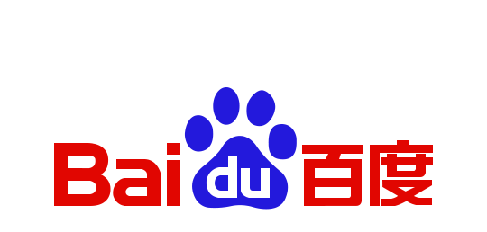

|
Jiachen Tao
I am a third-year Ph.D. student in Computer Science at the
University of Illinois Chicago, advised by
Prof. Yan Yan.
I began my PhD at UIC in 2024. I received my bachelor’s degree from Zhejiang University,
where I was fortunate to be advised by Prof. Yi Yang.
My research spans robotics, 3D/4D vision. I am interested
in representations that connect geometry, physics, and learning for efficient perception and interaction.
My work has appeared at ICML, CVPR, NeurIPS, and BMVC. I have conducted research at
Mitsubishi Electric Research Laboratories, United Imaging Intelligence,
Zhejiang University, and Baidu Research.
Email /
CV /
Google Scholar /
Linkedin /
Github
I am actively seeking Research Scientist Internship opportunities for 2027.
Feel free to reach out if there is a good fit.
|
|
|
MERL · Research Internship · May 2026 - Aug. 2026
Research on Physics-based 3D Reconstruction of Refractive Airflow
Cambridge, Massachusetts
|
|
UII · Research Internship · May 2025 - Aug. 2025
Research on Physics-based Neural Rendering
Boston, Massachusetts
|
|
Zhejiang University · Research Assistant · Jul. 2022 - Jun. 2024
Research on 3D Human Generation and Reconstruction
Hangzhou, China
|
 |
Baidu Research · Research Internship · Jan. 2022 - Jun. 2022
Research on Person and Vehicle Re-identification
Beijing, China
|
|
Publications* Equal contribution.
|
|
|
PRISM: Primitive Routing via In-context Skill Mixing for Retentive VLA Adaptation
Jiachen Tao, Gengyu Zhang, Haoxuan Wang, Bing Liu, Yan Yan
NeurIPS 2026. PDF
|
|
|
ReflFlow: Learning Geometry-Guided Ray Tracing for Dynamic Specular Reconstruction
Jiachen Tao, Junyi Wu, Haoxuan Wang, Zongxin Yang, Dawen Cai, Yan Yan
ICML 2026. PDF
|
|
|
Consistent Instance Field for Dynamic Scene Understanding
Junyi Wu, Van Nguyen Nguyen, Benjamin Planche, Jiachen Tao, Changchang Sun, Zhongpai Gao, Zhenghao Zhao, Anwesa Choudhuri, Gengyu Zhang, Meng Zheng, Feiran Wang, Terrence Chen, Yan Yan, Ziyan Wu
CVPR 2026. Project Page. PDF
|
|
|
X-Field: A Physically Informed Representation for 3D X-ray Reconstruction
Feiran Wang*, Jiachen Tao*, Junyi Wu*, Haoxuan Wang, Bin Duan, Kai Wang, Zongxin Yang, Yan Yan
NeurIPS 2025. Spotlight. PDF
|
|
|
Orientation-Anchored Hyper-Gaussian for 4D Reconstruction from Casual Videos
Junyi Wu, Jiachen Tao, Haoxuan Wang, Gaowen Liu, Ramana Rao Kompella, Yan Yan
NeurIPS 2025. PDF
|
|
|
DepthHMR: Leveraging Depth Around Humans for Multi-Human Mesh Generation
Nikhil Sharma, Jiachen Tao, Junyi Wu, Yan Yan
BMVC 2025. PDF
|
|
|
From Particles to Fields: Reframing Photon Mapping with Continuous Gaussian Photon Fields
Jiachen Tao, Benjamin Planche, Van Nguyen Nguyen, Junyi Wu, Yuchun Liu, Haoxuan Wang, Zhongpai Gao, Gengyu Zhang, Feiran Wang, Anwesa Choudhuri, Zhenghao Zhao, Weitai Kang, Terrence Chen, Yan Yan, Ziyan Wu
Under Review. 2026. PDF
|
- [09/2026] My first-author paper PRISM was accepted to NeurIPS 2026 🎉.
- [08/2026] I completed a research internship at Mitsubishi Electric Research Laboratories.
- [2026] My first-author paper ReflFlow was accepted to ICML 2026 🎉.
- [2026] Our paper Consistent Instance Field was accepted to CVPR 2026 🎉.
- [2025] My co-first-author paper X-Field was selected as a NeurIPS 2025 Spotlight 🎉.
- [2025] Our paper Orientation-Anchored Hyper-Gaussian was accepted to NeurIPS 2025 🎉.
- [2025] Our paper DepthHMR was accepted to BMVC 2025 🎉.
Last updated November 2026. |
|